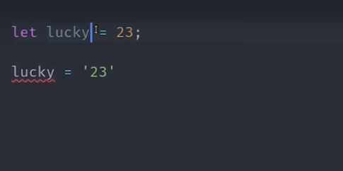

TypeScript
JS with static typing
by Mashnitsky Vadim
What is TypeScript?

TypeSript is basically
a strict syntactical superset of JavaScript
that adds optional static typing to the language and compiles to plain JavaScript
What kind of language is it?
- Scripting
- Object-Oriented
- Structured
- Imperative
- Functional
- Generic
Developed & supported by
OpenSource
How does it work?
TypeScript code
is compilled to
Plain JavaScript
and than you can run it
But what's the point?
Variable Typing
Variable Typing
Variable Typing
Variable Typing
Creating Custom Types
Creating Custom Types
Creating custom oblect types (interfaces)
Creating custom oblect types (interfaces)
Function typing
Function typing
Function typing
Function typing
Array typing
Array typing
Generics
Generics
What is TS used for?
- AngularJS
- ionic
- NativeScript
- DOJO
- Epic
- Pretty much everything